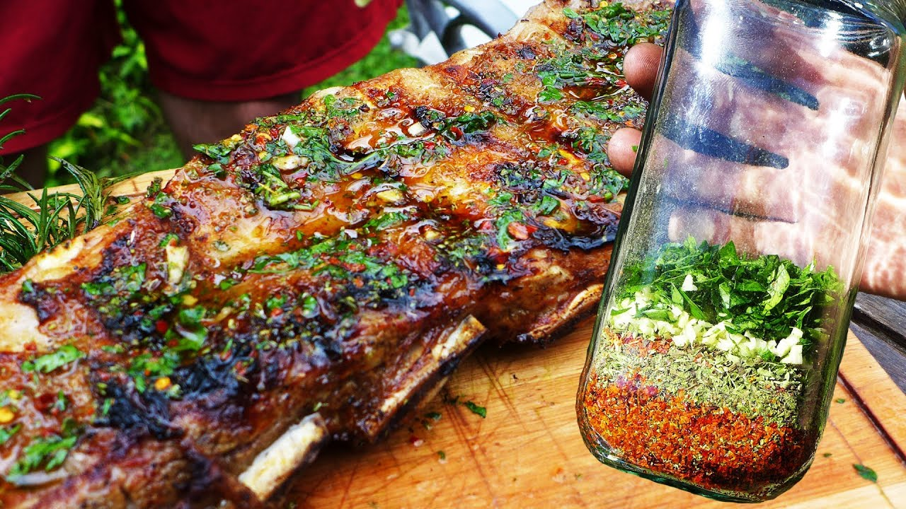

Short Ribs with chimichurri

Description
Short ribs with chimichurri is a flavorful and indulgent dish that pairs succulent, tender beef short
ribs with a vibrant, tangy chimichurri sauce. The short ribs are slow-cooked or grilled to perfection, becoming
melt-in-your-mouth tender, while the chimichurri adds a refreshing, zesty contrast. The rich, hearty flavor of the beef
is beautifully complemented by the herbaceous and slightly tangy sauce, creating a perfect balance of flavors.
This dish offers a satisfying and unforgettable dining experience, making it ideal for both casual meals and special occasions.
Ingredients
- 3 Short ribs cut in the middle
- salt
- black pepper
- 2 zucchini
- 3 leeks
- 2 Juliet tomatoes
- 1 bundle of radishes
- 1 sprig of fresh parsley
- 1 sprig of fresh oregano
- 1 sprig of fresh thyme
- 1 sprig of fresh rosemary
- 1 jalapeño chili
- vinegar
- olive oil
Steps
- Slice the Short Ribs and add salt and pepper on both sides.
- Chop parsley, oregano, rosemary, and thyme, add 1 chopped jalapeño, salt, 2 tablespoons vinegar and cover with olive oil.
- Cut the vegetables for grilling and place them on a tray or platter next to the grill.
- Prepare the grill with even embers and arrange the short ribs.
- Then place the vegetables (tomato and zucchini first with their center down) and cook for approximately 10 minutes before turning
everything over.
- Cook the meat 10 more minutes and remove the vegetables as soon as they are ready.
- Serve the meat and vegetables with the chimichurri and bon appetit!